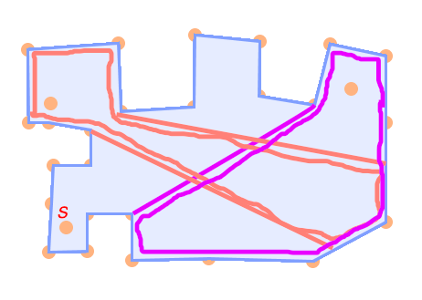
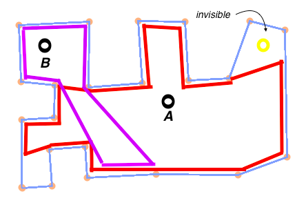
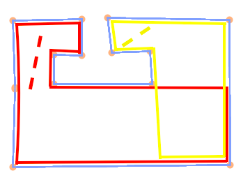
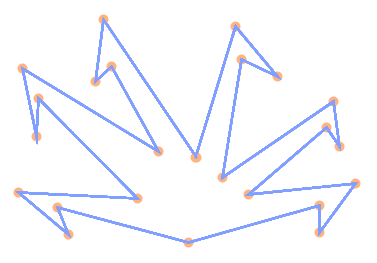
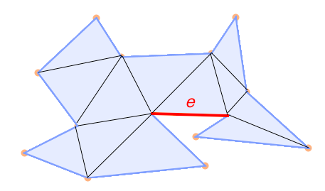
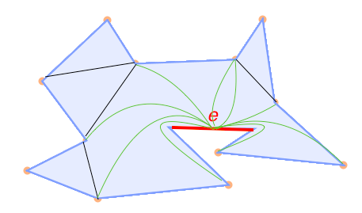
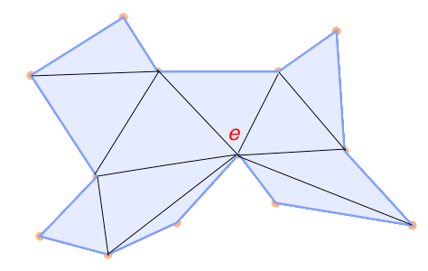
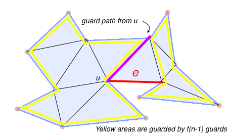
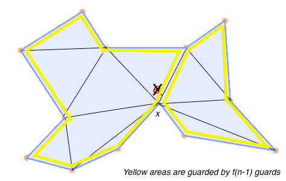
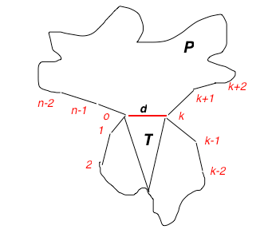

Here I will explain the art gallery problem - that is, using a set of points whose visibility region completely covers a polygon. I will then look at the extension of using mobile guards to reduce the number necessary to cover the gallery.
Much of this material comes from Joseph O'Rourke's book Art Gallery Theorems and Algorithms (Oxford University Press 1987). Click here to read his full text.
The art gallery problem is a well-studied problem in computational geometry. In the general case of the art gallery problem, points (guards) are placed in stationary position throughout a simple polygon (an art gallery). The problem is how many guards you need and where to put them to achieve full coverage of the region.
Below, we can see two examples: in Example 1, the art gallery is completely coverd by the guards. Every point in the art gallery can be seen by one of more of the guards A, B, and C.
In Example 2, the art gallery is not covered. Point s is not in the visibility region of any guard. In fact, any point that is outside of the red and pink colored regions is invisible to both guards.
You can think of the visibility region of a guard as the collection of all points in the polygon where you can draw a line between the point and the guard, and have that line be completely contained within the polygon.
 In this variant of the art gallery problem, we modify the power of the guard. Each guard is permitted to "patrol" an interior line segment.
Let s be a line segment completely contained in the polygon. Then a point p in the polygon is said to be seen by s (covered by s) if there is a point x on the line such that the segment xp is completely contained in the polygon. Below is an art gallery completely covered by two mobile guards.
Mobile guards are more powerful than stationary guards: only three-quarters as many are needed, in both general and orthogonal polygons. Below, you can see that the the second column is 3/4 times the first. Moreover, orthogonal polygons are three-quarters easier to cover than general polygons: the second row is 3/4 times the first.
| Stationary | Mobile | |
|---|---|---|
| General | n/3 | n/4 |
| Orthogonal | n/4 | (3n+4)/16 |
Before I go into the n/4 bound, it's helpful to get some intuition about the n/3 bound for stationary guards. Steve Fisk proved this with a three-coloring argument: The polygon is triangulated, and the verticies are three-colored. Then, any color subset of the guards forms a valid guard set, hence, the n/3 bound.
We want to show that n/4 is the upper bound for the number of mobile guards necessary to cover a polygon. First we will show that n/4 guards is necessary, and then we will prove that it is sufficient.
This is actually the easy part of the proof, and it defines how many guards we need in the worst case. The picture below gives a polygon where n/4 mobile guards are necessary to cover the area, because we can't do it with any fewer.
Proving that n/4 guards suffices is an inductive proof. Basically, what we do is show that n/4 guards suffices if a guard's path can only be along a diagonal of the triangulation graph T of the polygon. Since these triangulation diagonal guards are special cases of diagonal guards, and diagonal guards are special cases of line guards, we have the n/4 bound for any moving guards.
First we need to establish a basic manipulation of our art gallery called an edge contraction. The contraction of an edge in the art gallery alters its triangulation graph. It takes the two endpoints of the edge we're contracting and "squashes" them together into one node.
Below, you can see a triangulation graph T of a polygon P. In the next three pictures, we "squash" edge e. The new triangulation, T', is the triangulation of some polygon P'.
 Now we have the new triangulation, T'.
Now, suppose we place a guard on a triangulation diagonal of P so that one of his path endpoints is at an endpoint of e. Then that edge can be squashed out for guard coverage calculations. More formally, if f(n) triangulation diagonal guards are sufficient for an n-node triangulation, then a guard placed at an endpoint of an edge e means you only need f(n-1) guards to guard the rest of the polygon.
Here's why that works. Suppose we edge-contract the edge e in the triangulation T below. Now the new graph T' has n-1 vertices. This new graph must be the triangulation graph of some polygon P' with n-1 vertices.
 Let x be the node that replaced edge e. Suppose no guard is placed at x in T'. Then the same guard placements will dominate T' that worked for T, since the guard at u in the untriangulated version dominated the triangle with edge e, and the remaining triangles have dominated versions in T'.
Next we establish that n/4 guards is sufficient for values of n between 4 and 10. With n values this small, it is easy to see that the number of possible triangulations is small, and they all guarantee that one or two guards is sufficient. Below I present two of the cases as samples.
There are only 5 distinct triangulations of a polygon with n vertices, and only one reflex angle is possible. With a convex polygon, obviously one guard works. For a polygon with a reflex angle, placing one endpoint at the reflex angle gives a one-guard covering.
Let d be an arbitrary internal diagonal. Then this partitions the edges into either 2+5 or 3+4. In either case, a diagonal between any two reflex angles (if there are 2 or more) or just a diagonal anchored at a reflex angle (if there is just 1) or a diagonal anywhere (if it is convex) will cover the shape.
Finally, we establish the induction step. We must show that for any polygon P with more than 9 vertices, its triangulation graph partitions it into two pieces, one of which contains k = 5, 6, 7, or 8 arcs corresponding to edges of P.
To prove this, choose a diagonal of T that separates off a minimum number of polygon edges that is at least 5. The diagonal supports a triangle whose apex is between vertices 0 and k in the numbering below. Since k is minimal, t must be at least 4 and k-t must be less than or equal to 4. Adding these together, we see that k must be less than or equal to 8. So we can split off 8 vertices from the triangulation.
With this result, the rest of the proof is just case analysis of values of k between 5 and 8, showing that each value of k can be guarded with at most n/4 guards.
Use the application below to see what different guarding patterns would look like.
Click to start building a polygon, and hit the space bar when you're done. Then, build guard paths by clicking where you want the endpoints of the patrol routes.
Usage note: When you hit the space bar to finish the polygon, it will only close and fill in if the last line segment doesn't intersect any of the others (making a non-simple polygon. If finishing the polygon would make it non-simple, it just lets you keep making points. However, it doesn't currently check if any of the other edges make the polygon non-simple, so just don't do that.